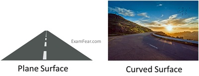
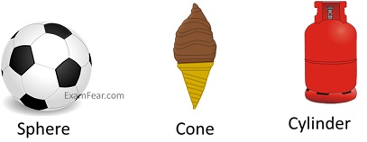

Introduction to Shapes
A shape is the form of an object or its external boundary, outline, or external surface, as opposed to other properties such as color, texture, or material composition. In mathematics, there are various kinds of shapes. Below are a few examples.

